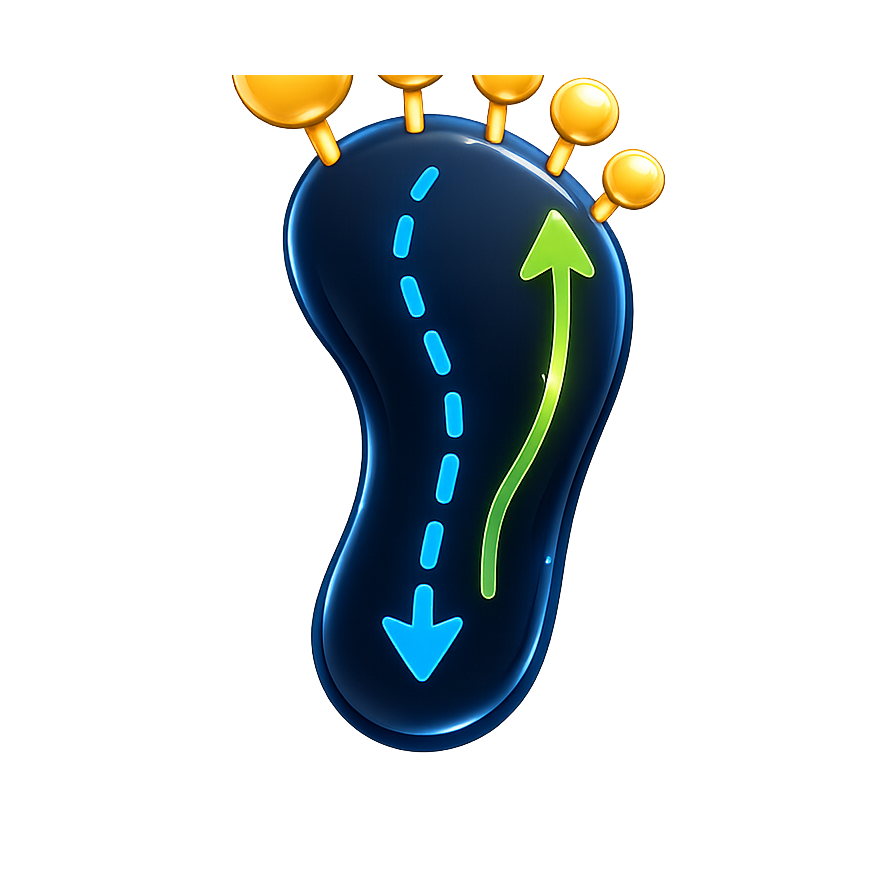

footprintjs
core engineThe flowchart pattern for backend code — causal traces, transactional state, variable-first backward slicing, and auto-generated tool descriptions. Everything else is built on this.

footprintjs BlogFrom backend pipelines to AI agents — every run records why it did what it did. Trace any answer back to the exact cause, and prove the fix by replaying it.
Every run records itself as it happens — not reconstructed from logs afterward. One trustworthy trace, and you choose the lens.
Inline recording is truth. Post-processing is reconstruction.
The flowchart pattern for backend code — causal traces, transactional state, variable-first backward slicing, and auto-generated tool descriptions. Everything else is built on this.
Build AI agents whose every LLM call traces back to what was injected, who triggered it, and what it cost. When an answer is wrong, localize which piece of context caused it — and prove it by replay. Built on footprintjs.
Visualize a footprintjs run — the flowchart, time-travel replay, and a causal rewind that walks any variable back to its birth on the same timeline. Themeable React components.
Debug an agentfootprint run — messages, prompts, tool calls, decision scope, and cost, with one time cursor across all of them. Built on Explainable UI.
The non-developer's view of an agent run — its reasoning and tool loop replayed as an animated, scrubbable story, including a 'why this tool?' rack that scores what the agent could have picked. No build step.
Turn your web app into an agent-operable app — its buttons and flows become a typed skill graph an agent plans over and acts on, served over MCP. Start read-only in guide mode; adopt one rung at a time.